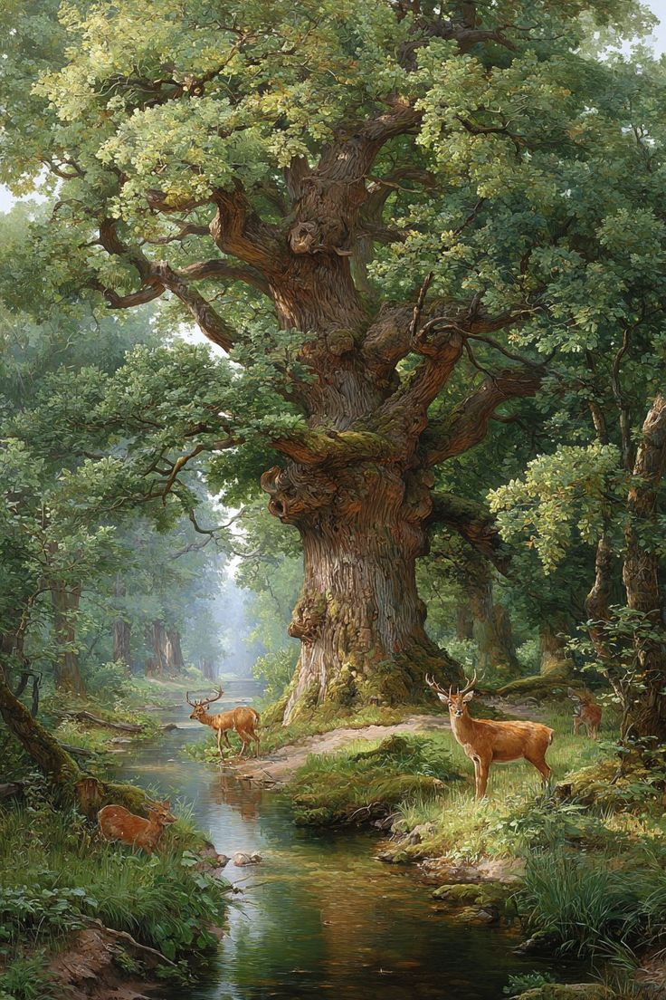

El gran árbol sintió una paz profunda recorrer su tronco. Aquellos niños, a quienes había
entregado todo sin esperar nada a cambio, habían comprendido su sacrificio.
Mientras descansaba bajo el cielo, supo que su generosidad había dado un fruto distinto, uno eterno.
Al final, el gran árbol nunca se arrepintió. Su soledad se transformó en bosque,
y su amor, en vida nueva.
